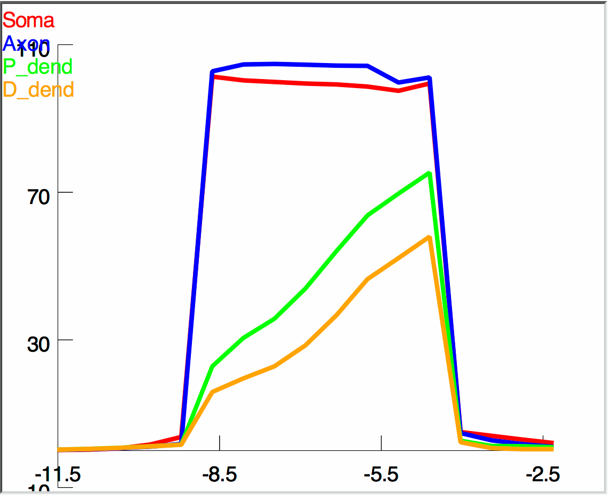
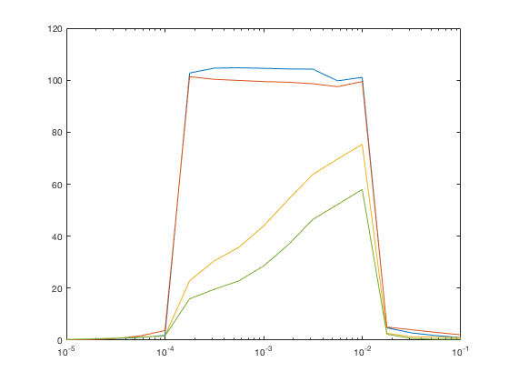

This is the readme for the model associated with figure 15 from the paper:
Appukuttan S, Brain KL, Manchanda R (2017) Modeling extracellular fields for a three-dimensional network of cells using NEURON. J Neurosci Methods 290:27-38
http://dx.doi.org/10.1016/j.jneumeth.2017.07.005
This model was contributed by S Appukuttan. It is written in the NEURON simulator which is freely available from
http://neuron.yale.edu
If you need more help than given below in running the simulation please consult this page:
https://senselab.med.yale.edu/ModelDB/NEURON_DwnldGuide.cshtml
Usage:
------
Auto-launch from modeldb (if NEURON installed and the browser is configured) or download and extract the archive and start with a command like
nrngui init.hoc
on unix/linux, or start the init.hoc file on mswin or mac os x.
Click the RunAll button. After a minute the simulation completes
and a figure similar to figure 15 in the paper is displayed:

Also a file called PeakDepol.dat will be created which you can graph with your favorite graphing program. The matlab program included in this archive:
plotDepolarization.m
was used to make the publication figure 15. It requires a program fixPSlinestyle.m from the matlab file exchange to re-write an output fig.eps file however will generate a figure onscreen without it.
The graph generated should look like this:

20180604 S Appukuttan contributed the matlab plotting program plotDepolarization.m
20180605 S Appukuttan updated the neuron graph colors to match the matlab plot.